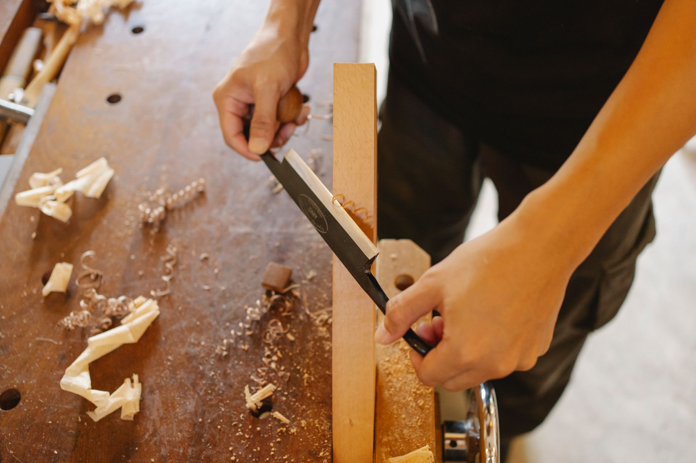
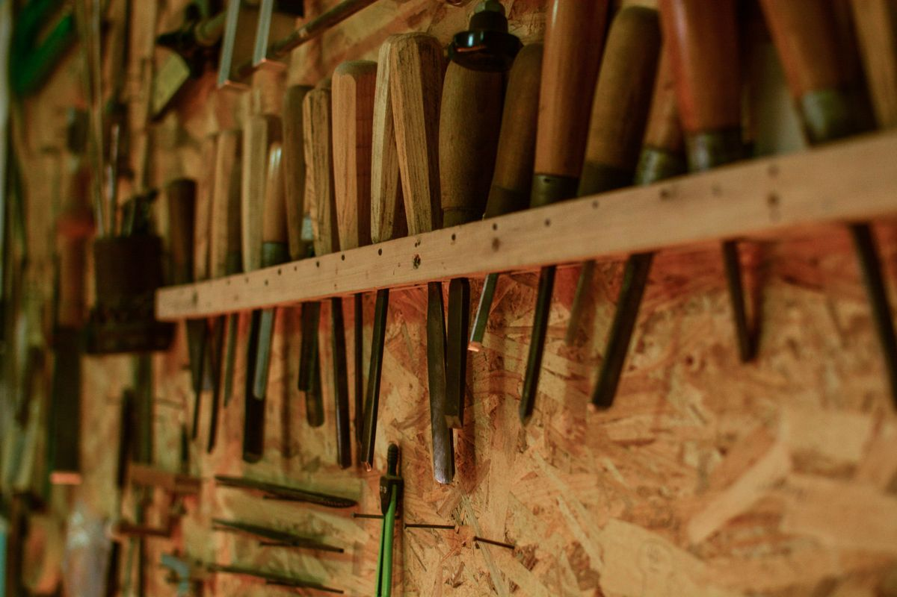

SIGN / お店の看板
美容室のスタンド看板
美容室「Rosemaria」の看板を、経年に伴い新たに制作した事例が紹介されています。

WOODWORK & EVERYDAY LIFE
青森・弘前の木a（コア）。
木工雑貨から家具、お店の看板や扉まで。
オーダー制作の、いくつかのかたちをご紹介します。
01 / WHAT WE MAKE
いつも使う小さなトレー。
人を迎える看板や扉。
木のものを、使う場所から考えてみる。
木aでは、木工雑貨・家具の製作とオーダーに対応しています。公式ブログに掲載された制作内容をもとに、相談のきっかけをまとめました。
制作の可否や素材・寸法は、内容ごとに確認が必要です。
A FEEL FOR WOOD
木の質感と手仕事を伝える、イメージギャラリー。
写真素材の出典はページ末尾に掲載しています。

02 / FROM THE JOURNAL
実際の作品写真は、リンク先の公式記事で。
この見本には転載していません。
SIGN / お店の看板
美容室「Rosemaria」の看板を、経年に伴い新たに制作した事例が紹介されています。
TRAY / 木工小物
「cafe noi」から追加注文を受けた、木製トレーの制作が掲載されています。
DOOR / お店の扉
「まつ毛パーマ専門店39」のターコイズカラーの扉を製作・設置した事例が紹介されています。
過去の掲載事例です。現在の受付状況や同仕様での制作を保証するものではありません。
ほかのオーダー記事も読む ↗03 / BEFORE YOU ASK
相談の前に、考えておきたいこと。
ラフなメモや参考写真から、
イメージを整理してみましょう。
用途、置く場所、室内か屋外か。
幅・奥行き・高さのおおよその寸法。
参考写真やラフ画、好きな色や質感。
希望時期と予算、配送先の地域。
内容を伝えたうえで、個別に確認する項目です。送料・設置対応・支払条件も、この見本では確定情報として掲載していません。